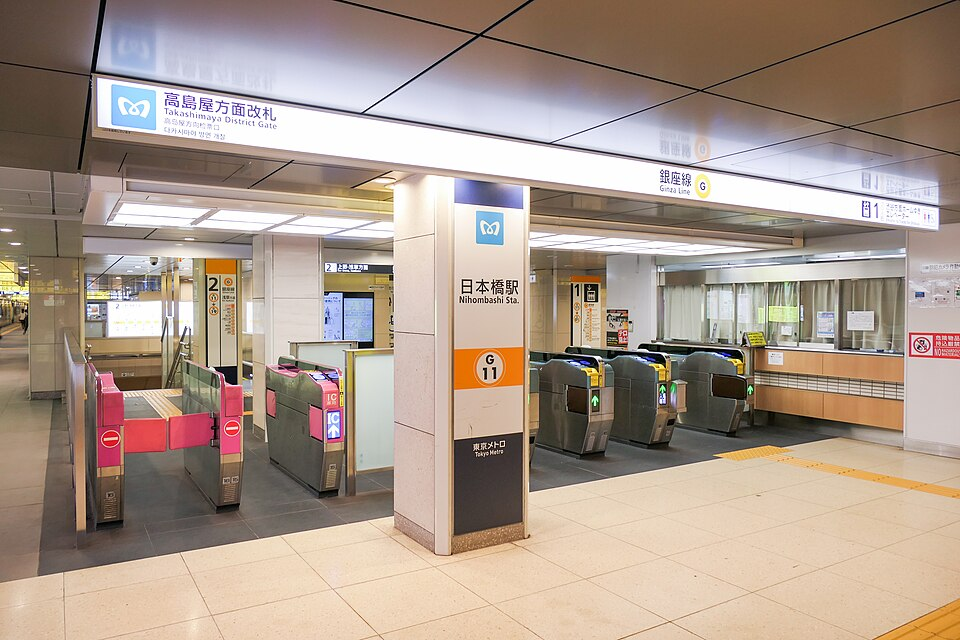

地下1階から
東京メトロ銀座線・東西線をご利用の方は、「高島屋方面改札」を目印にしてください。

写真の表示を目印に改札を探してください。改札を出た後は、下の図解に沿って地下1階のオフィス用入口へ進みます。
写真：MaedaAkihiko / Wikimedia Commons（2022年撮影、CC BY-SA 4.0）高島屋新館の売場入口を通り過ぎ、別のオフィス用入口へ
- 1
「高島屋方面改札」を出て左へ
銀座線・東西線からは、この改札を目指します。改札の先に髙島屋が見えます。
- 2
新館を正面に見て左へ進む
髙島屋新館の売場には入らず、その手前で左へ。通路に沿って進みます。
- 3
右手の「オフィス用入口」へ
黒い自動扉を2枚、ガラスの自動扉を1枚通ります。その先のシャトルエレベーターで9階へ。
「日本橋方面改札」からB4出口方面へ進みます。銀座線・東西線とは地下の道順が異なるため、建物の写真付き案内（5ページ目）をご確認ください。
地上1階から
東京駅から歩く方、タクシーなどで地上に着いた方はこちら。髙島屋本館・新館の売場入口とは別に、オフィス用入口があります。
写真は日本橋髙島屋三井ビルディングの外観です。オフィス用入口は写真には写っていません。1階の入口は「オフィス用入口」の表示を探してください。
写真：Wara070 / Wikimedia Commons（2026年撮影、CC BY 4.0）髙島屋新館と東京日本橋タワーの間の入口を目印に
- 1
「日本橋髙島屋三井ビルディング」を目指す
住所は日本橋2-5-1。髙島屋本館の隣にある新館側の建物です。
- 2
髙島屋新館の北側へ
中央通り側から来た場合は、本館・新館を通り過ぎ、東京日本橋タワー側へ進みます。
- 3
「オフィス用入口」から入る
入口を入ったら、受付の左にある自動扉の先へ。シャトルエレベーターで9階まで上がります。
見落としやすい、
黒いエレベーター。
地下1階からは黒い扉が続きます。髙島屋の売場用エレベーターには乗らず、三井ビルディングのシャトルエレベーターへ進みます。
- 01オフィス用入口へ
- 02黒い自動扉を2枚、ガラス扉を1枚
- 03奥のシャトルエレベーターで9階へ
エレベーターホールを
写真で確認建物の公式案内 PDF・5ページ目入口・エレベーターホールの写真を見る ↗
地上1階から入る場合：入口を入ったら受付の左の自動扉へ進み、その先のシャトルエレベーターで9階へ。1階入口の現地写真を見る ↗
9階で乗り換えて、会場へ
地下1階・地上1階のどちらから入っても、まずシャトルエレベーターで9階へ。9階のオフィスフロアで受付・案内を確認し、会場階行きのエレベーターに乗り換えます。
入館手続きや受付方法は、講演会の主催者から届いた案内を優先してください。
地図アプリで建物を見る